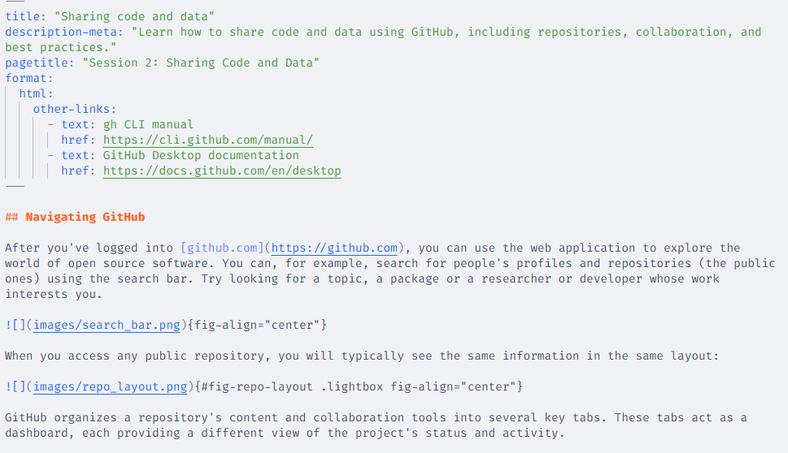
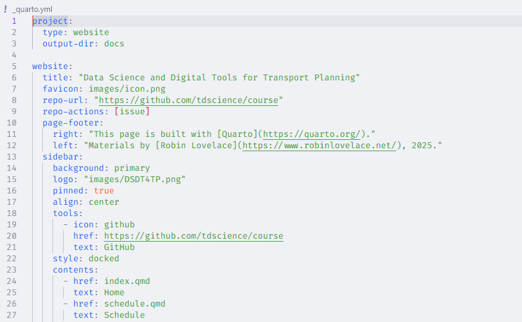

Reproducible papers and documentation with Quarto
1 Introduction to Quarto
Quarto is a next-generation open-source publishing system that allows you to combine text, code, and the output of that code into a single document. It is designed for technical and scientific communication, enabling the creation of reproducible documents that can be published in a wide variety of formats. You can use Quarto to produce reports, journal articles, presentation slides, books, and dashboards.
2 Quarto projects
Quarto documents are authored in a plain text format, using a markup language called Markdown. A markup language is a system for annotating a document using a set of tags or symbols to define the structure, formatting, and other properties of the text within a digital document. You might be familiar with commonly used markup languages like HTML or LaTeX. These languages make the text readable by both humans and machines. Since Quarto documents are based on plain text files, you can use Git and GitHub for version control.
If you are not familiar with using Markdown, take a look at the short course Communicate using Markdown on GitHub Skills.
A Quarto project has two key parts:
- Source files: These are the individual documents written in Quarto Markdown, typically with a
.qmdextension. They contain the narrative text, code chunks, other blocks, and a header for document-specific options.

qmd file of this website- Project File (
_quarto.yml): It’s a YAML (YAML Ain’t Markup Language) configuration file that lives in the project’s root directory. It defines global settings for all the documents in the project, such as the project type, metadata, output directories, and project-wide configuration for execution, style, and format. The contents of this file will depend on the type of project you are working on. Here is a sneak peek of the project file for this website:

3 Creating a Quarto project
You can create a Quarto project from scratch in an existing repository. First, let’s check that you can use quarto in your command line, and the version you have installed. If you run quarto -v in your shell, you should get the version of Quarto you have installed.
PS C:\temp\tdscience> quarto -v
1.7.34To create a new project in an existing directory, follow these steps:
- Go to your repository with
cd <path to repo> - Run
quarto create - Choose the name and type of project
- Open the project in your preferred IDE.
As you see in the following code, Quarto will automatically create a source file and the project file.
PS C:\temp> quarto create
? Create » project
? Type » default
? Directory » my-first-quarto-project
? Title (my-first-quarto-project) » My first quarto project
Creating project at C:\temp\my-first-quarto-project:
- Created _quarto.yml
- Created My first quarto project.qmd
? Open With
❯ positron
vscode
(don't open)You can also create Quarto projects interactively from the IDE. If you are interested, explore the documentation for RStudio, VSCode, or Positron.
4 Blocks/Chunks
Blocks in the qmd files are sections that are processed and formatted in a specific way. Blocks can contain code that can be processed in different ways. Chunks are delimited with ``` at the top and bottom, like this:
```
This is a block
```Blocks allow you to include content in HTML or LaTeX in the qmd files as raw code. Specifically for equations, you can use $$ as a delimiter. You can find more useful information on how to use Markdown in Quarto in the Quarto documentation.
5 Code chunks and settings
Code chunks that have the language name between braces at the start are executed as if you run the code in the console. For example:
```{r}
# this is a code chunk/block that executes R code
a <- 1 + 3
a
``````{python}
# this is a code chunk/block that executes python code
a = 1 + 3
print(a)
```There are several execution options that are useful, for example, to identify each code chunk, or to hide the code, the output, or both. These options are set in the code chunk header and allow you to precisely manage what is visible to the reader. As an example, the following code will hide the source code and only the output Hello World! will be visible in the rendered document.
```{r}
#| label: hello-block-r
#| echo: false
print("Hello World!")
``````{python}
#| label: hello-block-python
#| echo: false
print("Hello World!")
```See the full details on execution options here. Other options allow you to reference the output of the block. For example, if your code is producing a figure, you can use the label for cross-referencing (more about this will be detailed in the next session), or to set the caption.
6 Publishing your work
Quarto enables you to generate a wide range of output formats from your project, whether you need an HTML report, a PDF article, a slideshow, or an entire website (like this one). From the command line, you can run quarto render to produce the rendered version of your project, or quarto preview to inspect your edits interactively.
Combining Quarto and GitHub helps you make your research transparent, collaborative, and easy to share, ensuring that your work is not just published, but also verifiable and ready for future use.
7 Demonstration of reproducible papers
A good example of a reproducible paper that uses Quarto is the Route network simplification for transport planning, available here.
8 Practical: creating a minimal reproducible paper
Building on the exercise to create a repository called eitcourse in Session 1, add more contents to a placeholder paper, e.g. called eitpaper.qmd.
Try adding the following and render the document to HTML after each step:
- At least two types of headings (e.g. h1, h2, etc.)
- Some formatted text (e.g. bold, italic, etc.)
- A simple equation
- A code chunk that produces any type of output
- Add incorrect code to the code chunk to see how Quarto handles errors, e.g.
x = 5 + banana - Push the changes to GitHub
- Remember the commands
git add .,git commit -m "message", andgit push
- Remember the commands
- Bonus: Render it to PDF.
- Bonus: use the
quarto previewcommand to see your changes in real time.